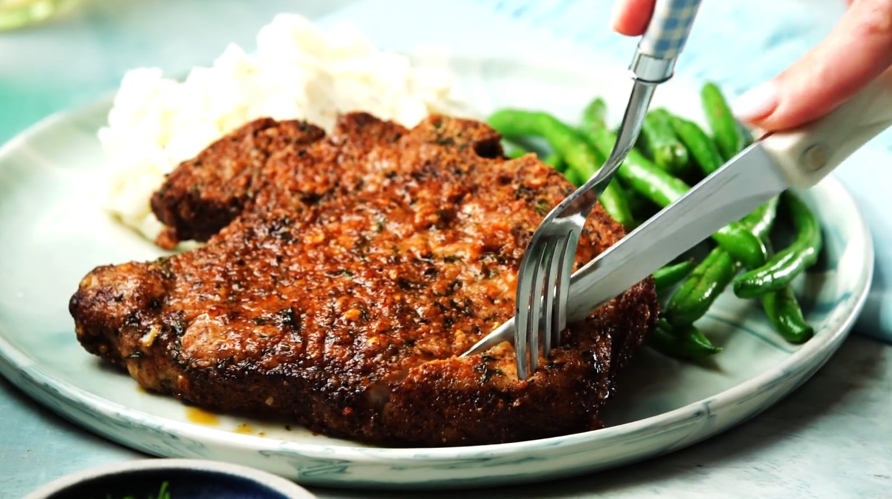

Easy Air Fryer Pork Chops

Description
Boneless pork chops cooked to perfection in the air fryer.
This recipe is so easy and you couldn't ask for a more tender and juicy chop.
- Prep Time: 5 mins
- Cook Time: 20 mins
- Total Time: 25 mins
- Servings: 4
Ingredients
- ½ cup olive oil½ cup grated Parmesan cheese
- 1 teaspoon paprika
- 1 teaspoon garlic powder
- 1 teaspoon kosher salt
- 1 teaspoon dried parsley
- ½ teaspoon ground black pepper
- 4 (5 ounce) boneless pork chops
- 2 tablespoons extra virgin olive oil
Steps:
- Preheat the air fryer to 380 degrees F (190 degrees C).
- Combine Parmesan cheese, paprika, garlic powder, salt, parsley,
and pepper in a flat shallow dish; mix well.
- Coat each pork chop with olive oil. Dredge both
sides of each chop in the Parmesan mixture and set on a plate.
- Place 2 chops in the basket of the air fryer and
cook for 10 minutes; flipping halfway through cook time.
Transfer to a cutting board and let rest for 5 minutes.
Repeat with remaining chops.
Served hot and enjoy!
Return to main page